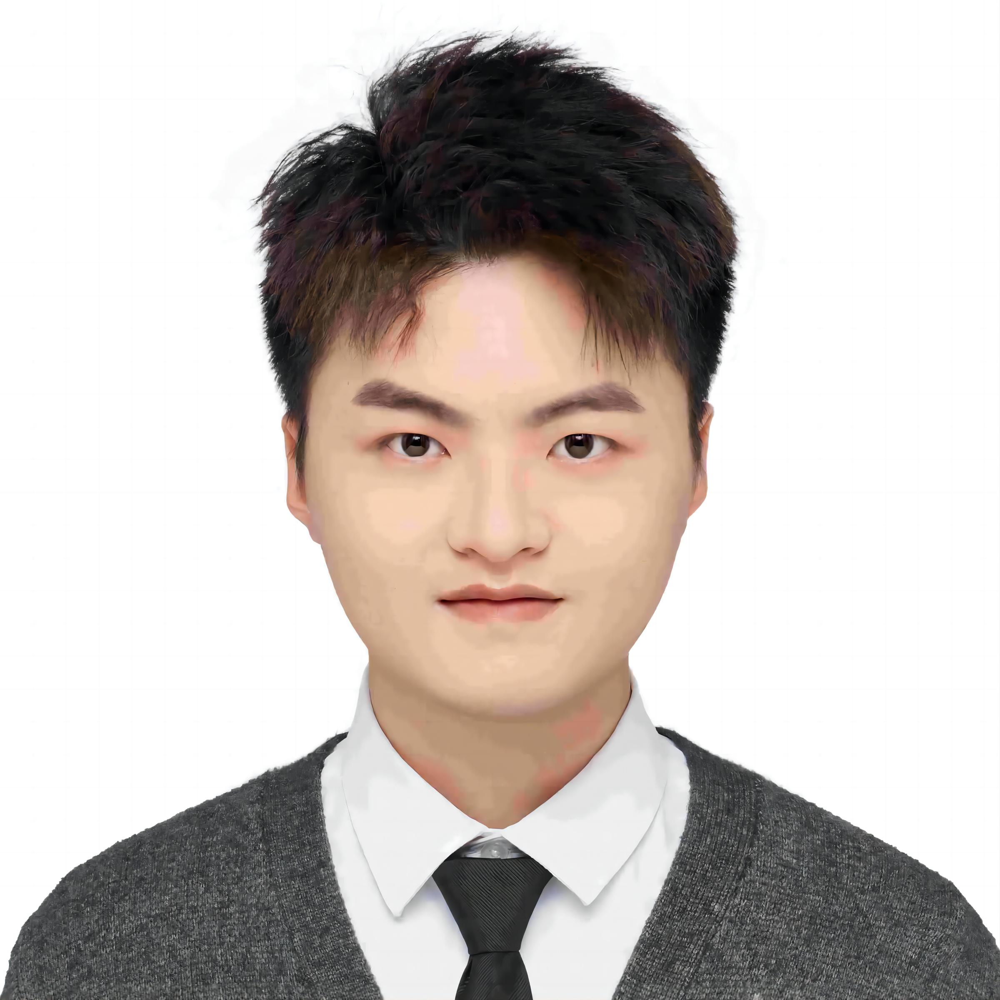
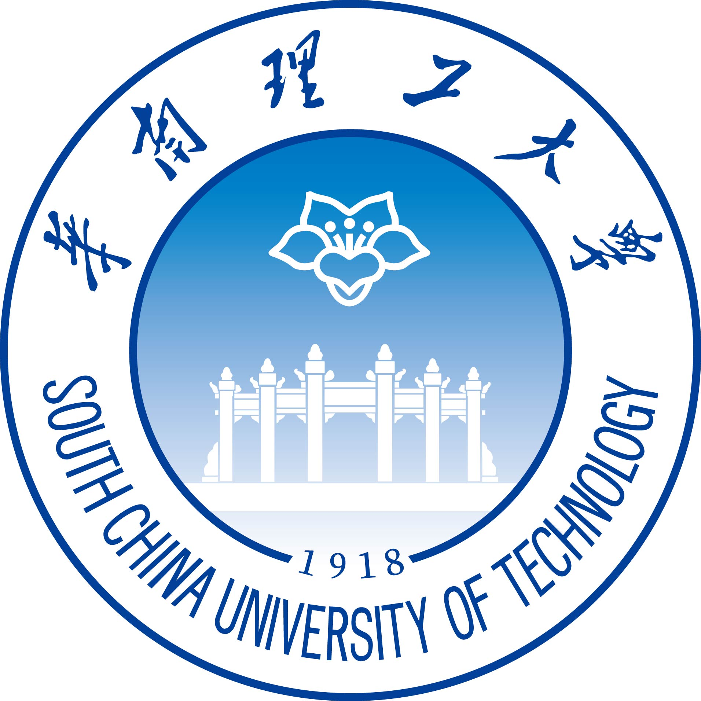
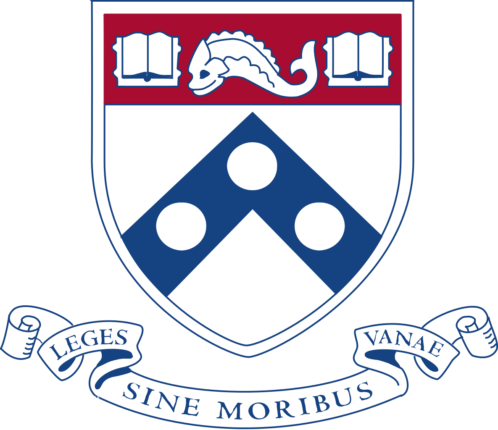
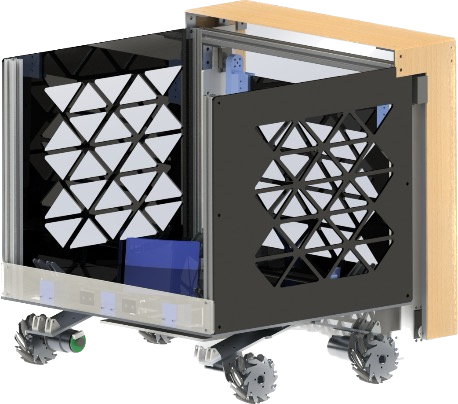
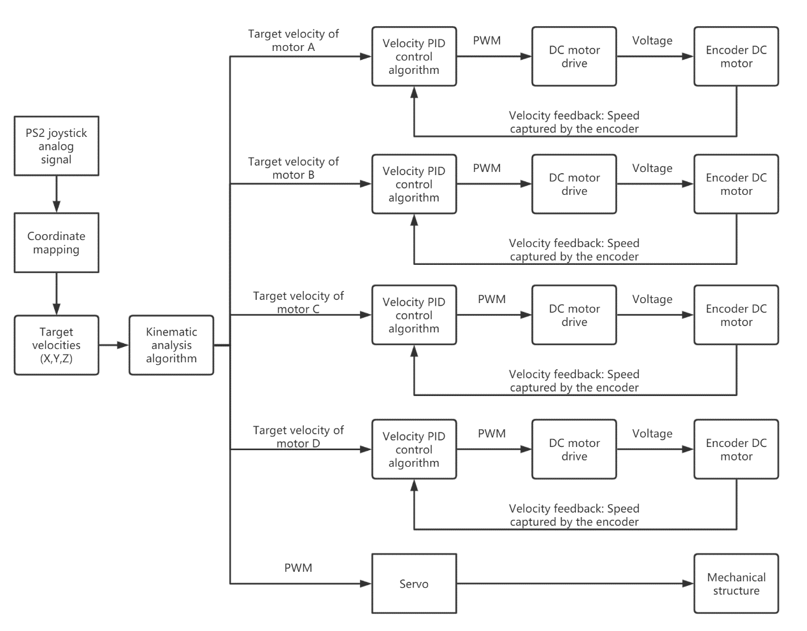
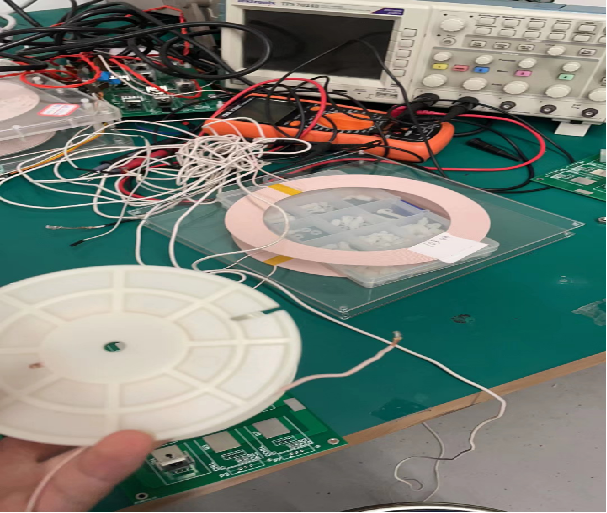
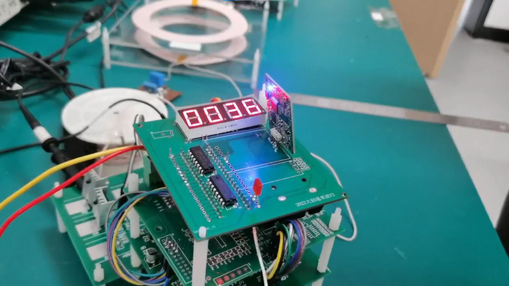
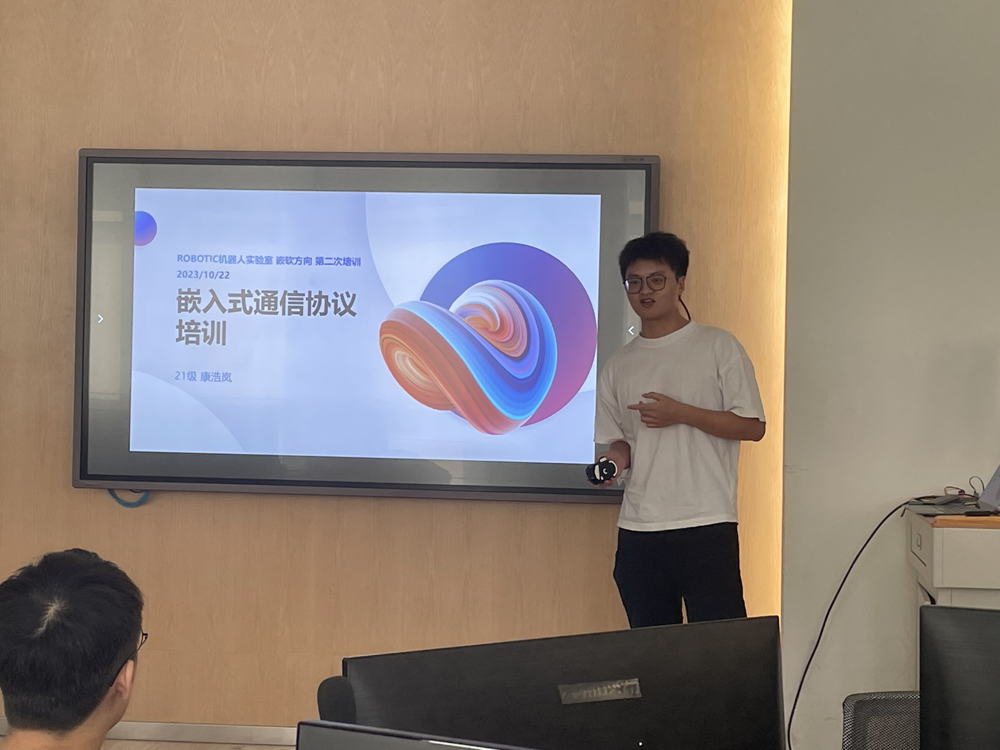

Arlen KangI'm a junior student in south china of technology major in Intelligent manufacturing.I have great interest in robotics and embedded systems. |
 |
{kind=link}
Education |
|  |
Bachelor's DegreeUniversity: South China University of Technology, Guangzhou, China Major: Bachelor of Science in Intelligent Manufacturing Expected Graduation: June 2025 Grades:
|
|  |
Exchange ProgramUniversity: University of Pennsylvania, Philadelphia, PA, USA Participated in a month-long exchange program focusing on innovation, where I studied emerging trends in technology and their application in robotics and intelligent systems. Program Time: February,2024 Grades:
|
InterestRobotics and Automation, Digital Manufacturing, Advanced Programming (Python, C++), System Integration |
Skill
|
ResearchI am an aspiring engineer with a passion for leveraging technology to solve real-world problems. Specializing in embedded systems. I have developed projects like an intelligent watch for posture recognition. My technical expertise is complemented by a strong foundation in programming languages such as Python, C++, and C. Beyond my technical skills, I thrive in collaborative settings, driven by a commitment to innovation and a desire to contribute to impactful projects.I am eager to explore new challenges and continue making meaningful contributions to the field of technology. |

|
A TinyML-based Human Activity Recognition Smart Watch 9, 2023 This project aims to develop an intelligent watch based on TinyML and deep learning algorithms, focusing on efficient and accurate posture recognition, and possessing the capability to control smart devices collaboratively. TinyML technology enables the running of machine learning models on ultra-low-power microcontroller devices, allowing the smart watch to perform local data analysis and processing without relying on cloud or edge servers, thereby reducing latency, enhancing privacy protection, and security. The project have won the first prize in our chllege! |
|   |
Design and Manufacture of a Robotic Ball Collector 6, 2023 The design of the vehicle is rooted in a Free Real-Time Operating System (FreeRTOS), incorporating an Openmv camera module for real-time image transmission and remote control.The vehicle's moving system is characterized using Mecanum Wheels, while the control system leverages a PS2 controller and Bluetooth technology for remote control. The programming approach for the robot's MCU controller is based on an RTOS (Real-Time Operating System) system, which differs from interrupt-driven control. In an RTOS, tasks are executed in a cooperative manner, where higher-priority tasks are given higher priority over lower-priority tasks.The target velocity is passed through the kinematic analysis function to obtain the actual output for each motor. Finally, the motor speed control is achieved by using a PID controller. Our robot achieved the second place in our college! |
|   |
Development of a Millimeter Wave Radar-Based Living Detection Device for Electric Vehicle Wireless Charging Safety 12, 2022 In this innovative project, our team aimed to enhance the safety of electric vehicle (EV) wireless charging systems and mitigate the adverse effects of electromagnetic field exposure on humans and animals. Over the course of a year, we successfully developed an integrated millimeter-wave (mmWave) radar sensor board, enabling effective communication between the mmWave radar and the STM32 main control chip. Overcame the limitations of traditional detection methods (infrared sensors, ultrasonic radar, and cameras) by leveraging mmWave radar technology, which offers extensive coverage (up to 160 meters), all-weather operation, and the ability to penetrate non-metallic materials. Received substantial support as part of a provincial-level university student innovation and entrepreneurship initiative[6,2022]. |
Ongoing project
These two projects are part of the Climbing Plan at South China University of Technology, showcasing the university's commitment to pioneering research and technological innovation. |
Talk |
|  |
In the initial phase of my final semester, I had the honor of delivering a lecture titled "The Common Communication Protocols in Embedded Systems" to the freshmen members of our robotics competition team, "Robot IC." My presentation covered essential protocols such as USART, IIC, and SPI. Following the theoretical part, I demonstrated practical applications, showcasing how to utilize fundamental development tools like Keil5 and CubeMX, further enriching the learning experience with a hands-on demonstration. |
Rewards |
|